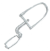
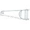

Motivation
Maintaining of software documentation is a complex task. As the time runs and the documented software is changed the documentation is getting obsolete. Changing documentation between versions is a boring and uncreative job.
We want to reduce effort to accomplish this task.
The page presents some tools for preventing the erosion of documentation and the fatique of analysts' minds.
 Content generation
There are two parts of the documentation - generated and handwritten. Both have advantages and disadvantages. The generated documentation, for example javaDoc, is easily maintained, because it is placed close to the source code. But it has an insufficient context. The handwritten documentation describes an application behavior more comprehensible, but it is insufficient in details. It can become outdated with some changes of the application.
We want to preserve the legibility of the documents but at the same time we need to avoid the outdated documentation.
In order to achieve the goal, the following example shows how the handwritten content can be mixed with generated parts.
Content substitution
There are many excellent libraries for content generation, for example: Thymeleaf, Velocity or JSP. Our approach is simpler and we hope the learning time you spend on our tool will be shorter.
Our tools and libraries for replacing placeholders with a generated content.
Diagrams generation
PlantUML is a component that allows to write diagrams quickly, in a simple and intuitive language. We suggest using the language in the documentation in form of generated parts.
We are introducing diagram generation utilities based on the PlantUML library.
 Log files parsing
Application logs are the best source for investigation of an application behavior. We suggest to use log files for generation of diagrams and other documentation parts.
The log-combiner tool allows to combine (merge) log files with different format of lines timestamps to a single file with lines sorted by timestamps.
It can be used as a data supplier for generated documentation.
 Other utilities
Other utilities
The ISO 8583 packer utility doesn't relate to documentation tools. But it can be useful for a payment software development.